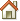

Images
The images below must either be in the /style directory, or you have to update the file paths in the CSS files and the preloadImages setting in treemenu.js.
| icon | meaning |
|---|---|
|  | home |
| line | |
| corner | |
| closed folder | |
| open folder | |
| open all folders | |
| close all folders | |
 |
expand |
| collapse | |
| document | |
 |
current active page |
Last modified: 2007-07-27